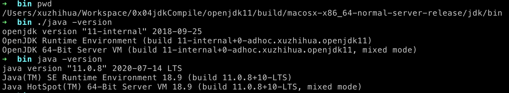
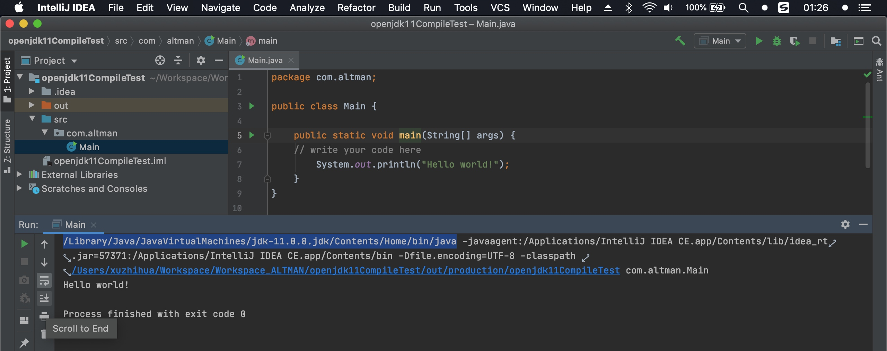
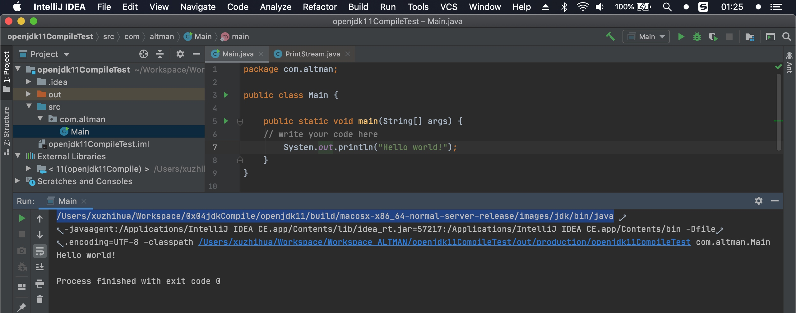
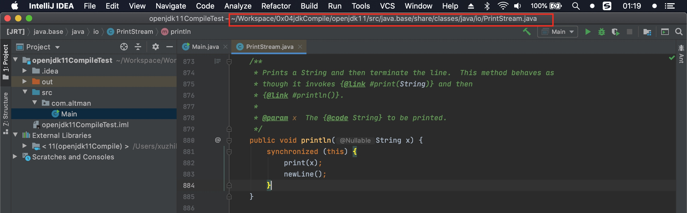
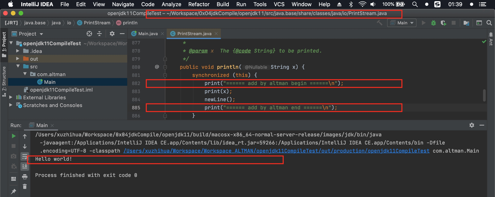
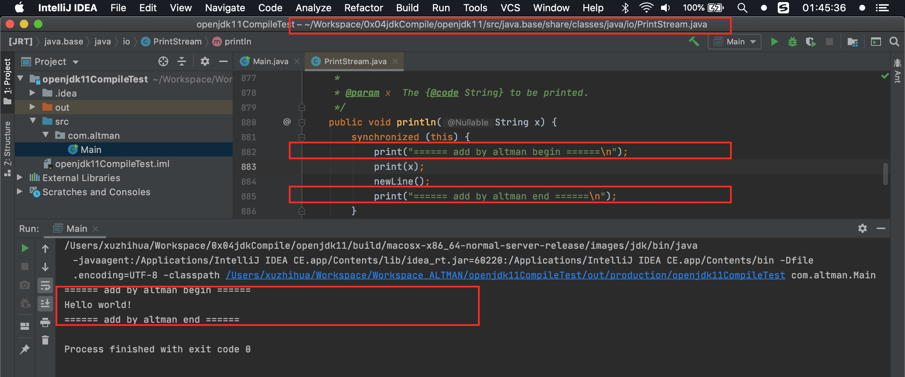
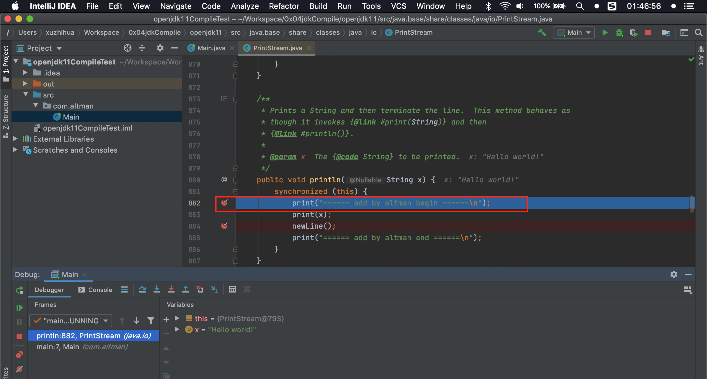

MacOS 本地编译 openJDK11
JDK都没手动编译过，敢说自己是Java程序员吗？实战编译Java源码（JDK源码,JVM）视频教程
奇怪的问题，我第一次是想测试jdk14，结果make images之后，死活不生效，后来改成和视频中一样版本11，成功。
环境支持
- bootstrap jdk 你想编译一个 jdk，你必须提前安装一个低一点 jdk(你想编译jdk11 那必须有一个jdk11或则10， 编译jdk14 需要jdk14或jdk13， 版本差太多时，下面执行sh configure时候会提示)
- unix like 环境
编译器/编译工具链
- linux: gcc clang
- macOS: Apple Xcode(using clang)
- Solaris: Oracle Solaris Studio
- AIX: IBM XL C/C++
- Windows: Microsoft Visual Studioi
其他支撑工具: autoconf/make/freetype
版本说明
- macOS: 10.15.5
- bootstarp jdk: 11.0.8 (本地安装的 java -version)
- Xcode: 11.5
- clang: 11.0.3(本地安装的 clang --version)
- clang++: 11.0.3(本地安装的 clang++ --version)
- autoconf: 2.69(本地安装的 autoconf --version)
- make: 3.81(本地安装的 make --version)
- freetype: 2.10.1(本地安装的 freetype-config --ftversion)
操作1:下载JDK源码
通过 mercurial 轻量级分布式版本控制系统下载(理解为另一种git)
- 安装方法: terminal 输入
pip install mercurial即可 - 验证方法:
hg --version - jdk源码网址: http://hg.openjdk.java.net/jdk
- 下载jdk:
hg clone http://hg.openjdk.java.net/jdk/jdk11/
- 安装方法: terminal 输入
通过网址下载 http://jdk.java.net/ (选择jdk14 zipfile: https://download.java.net/openjdk/jdk11/ri/openjdk-11+28_src.zip)
操作2:安装
- 新建目录
/Users/xuzhihua/Workspace/0x04jdkCompile目录，并将上面下载到的zip解压到这里，改文件名，得到/Users/xuzhihua/Workspace/0x04jdkCompile/openjdk11 - 切换目录
cd /Users/xuzhihua/Workspace/0x04jdkCompile/openjdk11 自动配置
sh configure注意关注结束时有没有报错 成功的话会输出A new configuration has been successfully created in
/Users/xuzhihua/Workspace/0x04jdkCompile/openjdk11/build/macosx-x86_64-server-release
using default settings.真正编译
make all第一次会全量编译，耗时长，其中的一些告警可忽略不管 成功的话会输出Finished building target 'all' in configuration 'macosx-x86_64-server-release'
编译完成，会在当前目录下生成 build 目录，所有的输出都在这里面
编译后的目录:
/Users/xuzhihua/Workspace/0x04jdkCompile/openjdk11/build/macosx-x86_64-server-release/
编译出来的成品目录:/Users/xuzhihua/Workspace/0x04jdkCompile/openjdk11/build/macosx-x86_64-server-release/images/jdk该内容与在oracle下载的jdk安装后的目录内容基本一样
编译后的可执行文件目录:/Users/xuzhihua/Workspace/0x04jdkCompile/openjdk11/build/macosx-x86_64-server-release/jdk/bin
验证一下 cd /Users/xuzhihua/Workspace/0x04jdkCompile/openjdk11/build/macosx-x86_64-server-release/jdk/bin
执行./java --version和java --version即可看到新编译的jdk与之前电脑环境的jdk输出信息

使用: 注释与调试
打开idea，新建工程 openjdk11CompileTest 的纯java应用，输出 Hello world! 截图如下 使用的jdk是电脑环境之前的jdk11，不是刚刚编译出来的jdk
更换sdk(按下cmd+; 找到SDKs): 删除之前的jdk，点击➕ add jdk，目录指向
/Users/xuzhihua/Workspace/0x04jdkCompile/openjdk11/build/macosx-x86_64-server-release/images/jdk，idea重新扫描文件后，重新允许main方法，截图如下 使用的jdk已经改成了刚刚手动编译的openjdk11
关联jdk原码(按下cmd+; 在SDKs-Sourcepath)，删除这里面所有的内容(这里默认使用生成build下面images里面的src.zip的内容) 这里的源码没法修改 并加注释，故删除掉，然后重新关联，指向目录
/Users/xuzhihua/Workspace/0x04jdkCompile/openjdk11/src这里是真正的源码位置，关联确认后，idea会再次重新扫描文件这个时候在main方法里面进 print 方法，截图如下， 即真正源码的位置，关联上了
修改源码的print方法，添加定制化内容，此时输出没有带出定制化的内容，需要操作步骤6，再运行(!!!注意 添加的定制化内容，注释或者任何东西，不要有中文 老老实实用英文，不然会有错误)
将步骤5中修改的源码，重新打包生成镜像后 ，在
/Users/xuzhihua/Workspace/0x04jdkCompile/openjdk11目录下执行make images(上面make all第一次执行是全量编译，比较慢，这次是增量编译，比较快, emmm 视频里比较快，我的电脑还是老老实实的慢 4min左右)，终端下编译成功后，切换到idea，他会自动重新扫描文件，扫描后再运行， 这次输出是成功的，带有定制化信息，断点也可以正常进入(如果断点不能进入，需要看一下上面关联的jdk和sourcepath是不是对的)

